ユーザーマニュアル
Version 1.0 — 2026年3月
このアプリはPWA（Progressive Web App）です。以下のURLをSafariで開き、ホーム画面に追加してお使いください。
上記URLをSafariで開き、画面下部中央の 共有ボタン（□↑） をタップします。
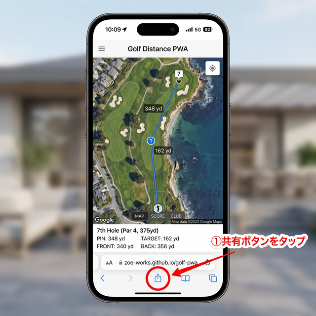
メニューから 「ホーム画面に追加」 を探してタップします。
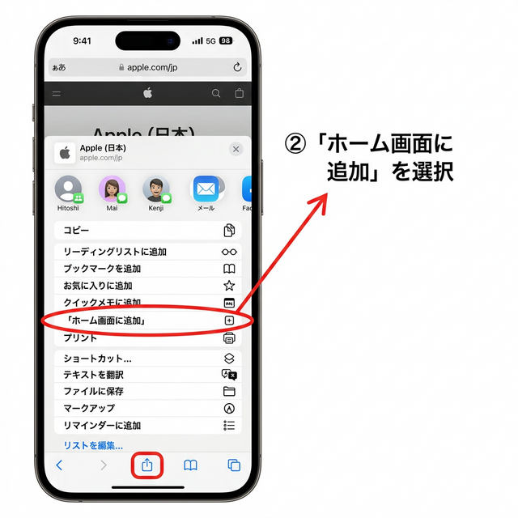
アプリ名を確認し、右上の 「追加」 をタップ。ホーム画面にアイコンが表示されます。
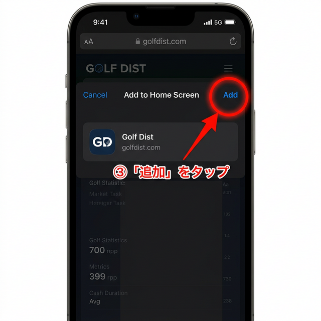
バッグに入っているクラブをあらかじめ登録しておくと、ショット記録時にそれらが選択肢として表示されます。
画面下のナビゲーションバーから Settings をタップし、CLUB SETTINGS をタップします。
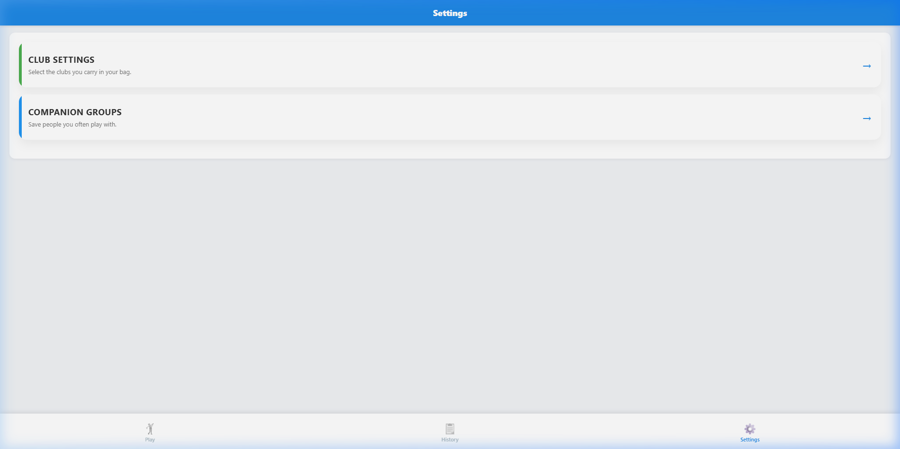
使用するクラブをタップして選択します。選択後 Save Settings をタップして保存します。
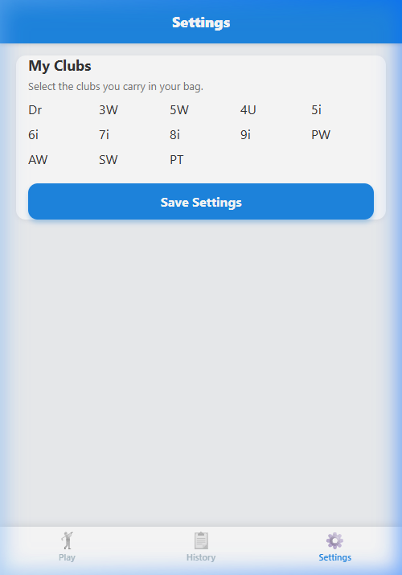
Play画面の左上にある Start Round ボタンをタップ。コース・日付を確認して Start Round をタップします。
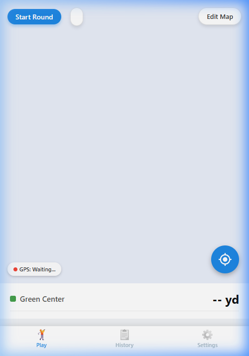
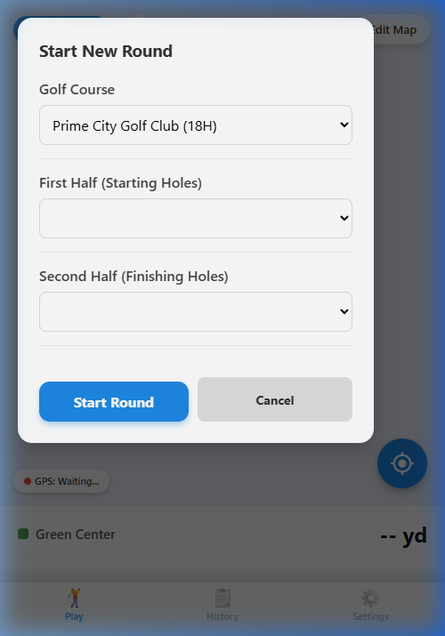
ラウンド中は地図上にグリーン・ハザードの距離がリアルタイムで表示されます。画面下部の Hole 1 | Par 4 でホール情報を確認できます。
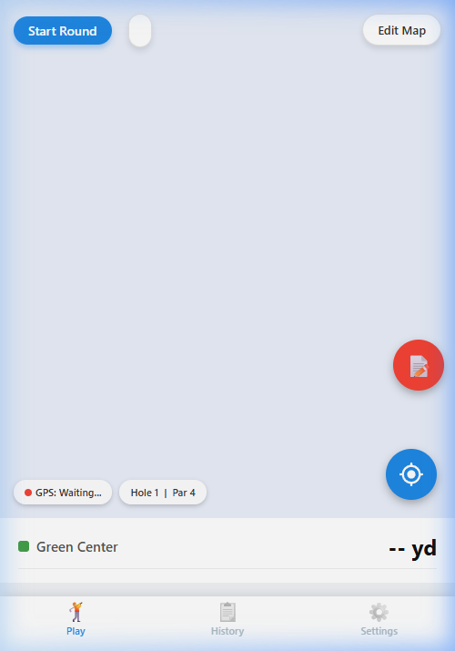
ショットごとに右下の赤い 📝ボタン をタップしてメモを記録します。
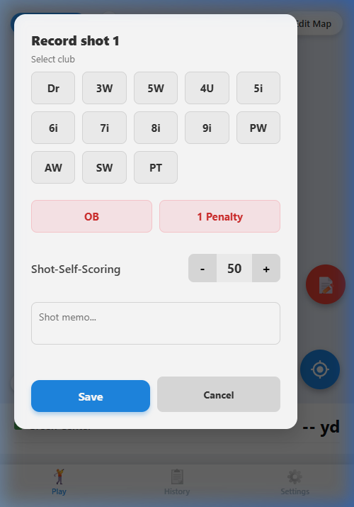
ホールが終わったら画面上部の Hole out ボタンをタップ。スコア情報を確認・修正します。
同伴者がいる場合は、同伴者のスコアも入力できます。
確認後 Save & Next で次のホールへ進みます。
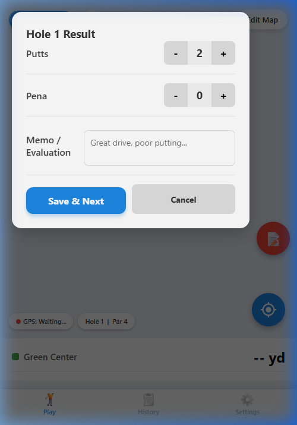
最終ホールで Hole Out 後、Round finish をタップするとラウンドが完了し、全ホールのスコアカードが自動表示されます。
Save Results をタップすると履歴に保存され、History タブからいつでも確認できます。
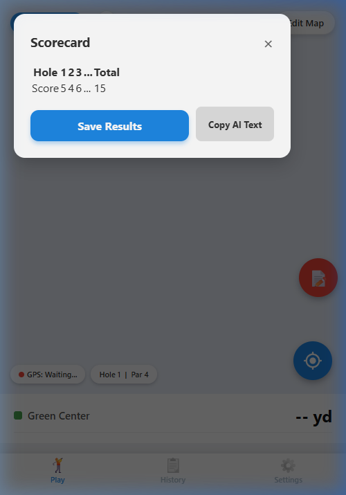